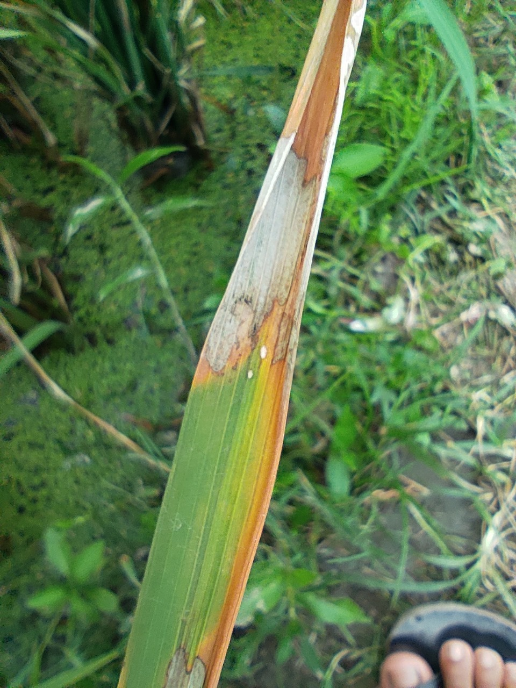
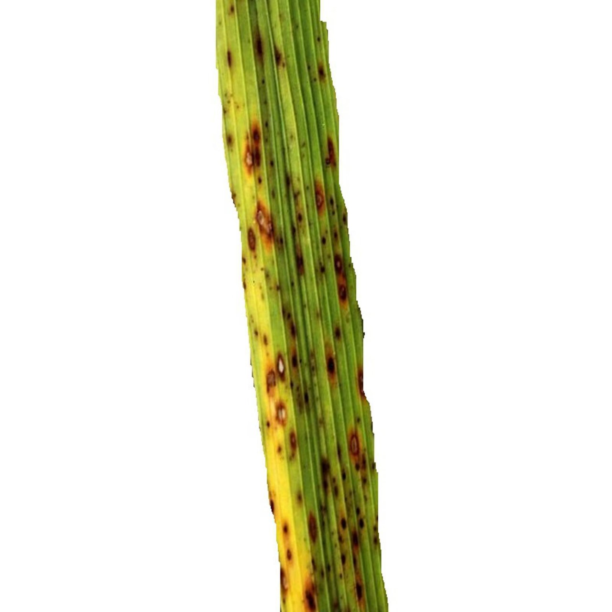
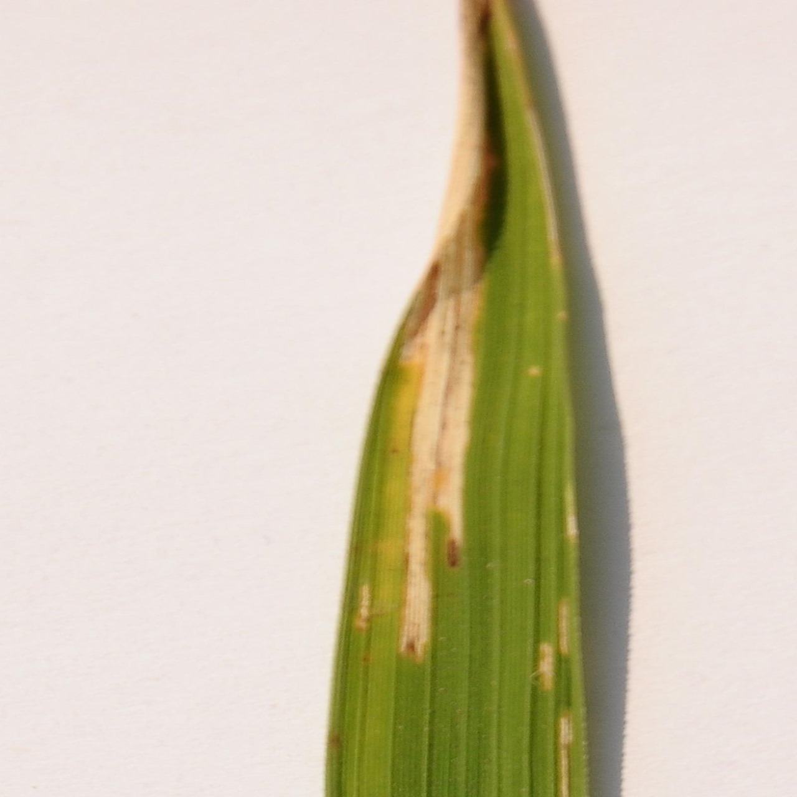

PlantCheck
Deteksi Penyakit Tanaman
Unggah foto daun untuk mendeteksi penyakit
Scan Daun
0
Total Diagnosa
0%
Akurasi Terakhir
0
Dataset Penyakit
Reset Statistik
Kategori Tanaman
Daun Tomat
Daun Singkong
Daun Padi
Daun Kentang
Daun Jagung
Pustaka Penyakit
Yellow Leaf Curl Virus
Lihat detail
Tomat
Menggulung
Menguning
Septoria Leaf Spot
Lihat detail
Tomat
Bercak
Leaf Mold
Lihat detail
Tomat
Jamur
Late Blight
Lihat detail
Tomat
Busuk Daun
Bacterial Spot
Lihat detail
Tomat
Bakteri
Mosaic Disease
Lihat detail
Singkong
Mosaik
Green Mottle
Lihat detail
Singkong
Beludru
Brown Streak Disease
Lihat detail
Singkong
Garis Coklat
Bacterial Blight
Lihat detail
Singkong
Hawar

Sheath Blight
Lihat detail
Padi
Hawar Pelepah
Leaf Scald
Lihat detail
Padi
Bercak

Brown Spot
Lihat detail
Padi
Bercak Coklat

Leaf Blight
Lihat detail
Padi
Hawar Daun
Late Blight
Lihat detail
Kentang
Busuk Daun
Early Blight
Lihat detail
Kentang
Bercak Kering
Northern Leaf Blight
Lihat detail
Jagung
Hawar
Common Rust
Lihat detail
Jagung
Karat Daun
Gray Leaf Spot
Lihat detail
Jagung
Bercak Abu